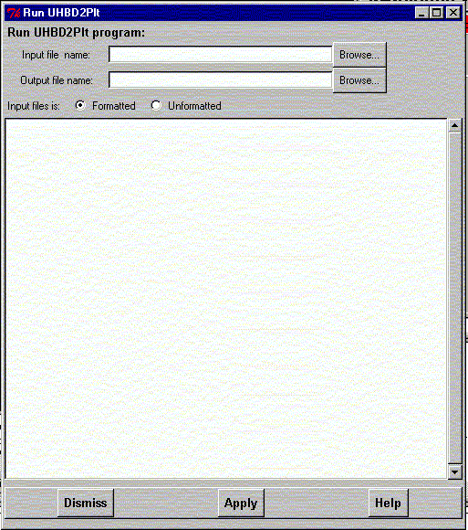

**************************************************************************
Run UHBD2plt program widget
Leif Laaksonen CSC 1999
**************************************************************************
Run the UHBD2plt program to convert a formatted or unformatted UHBD .grd grid file to a plt file format used by gOpenMol.
Give the input and output file names. Choose as the input file type either formatted or unformatted. Click the Apply button to do the operation.

Line command: no line command available inside gOpenMol. Use Unix/Dos shell line command.
**************************************************************************
LUL/1999
**************************************************************************